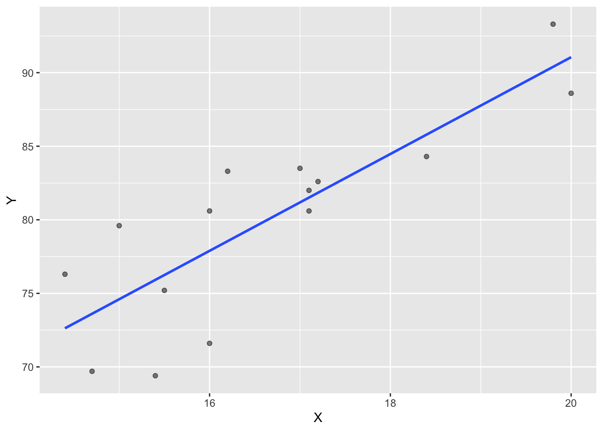
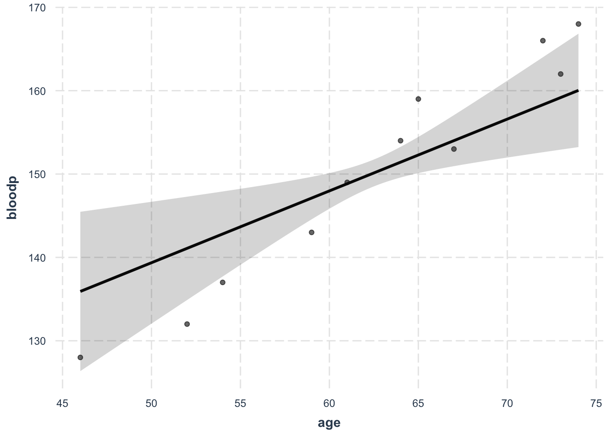
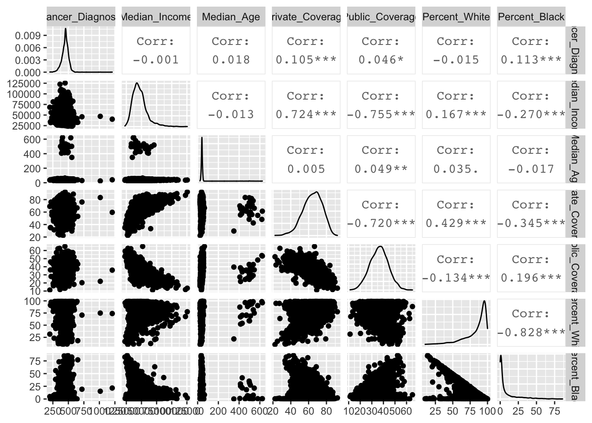
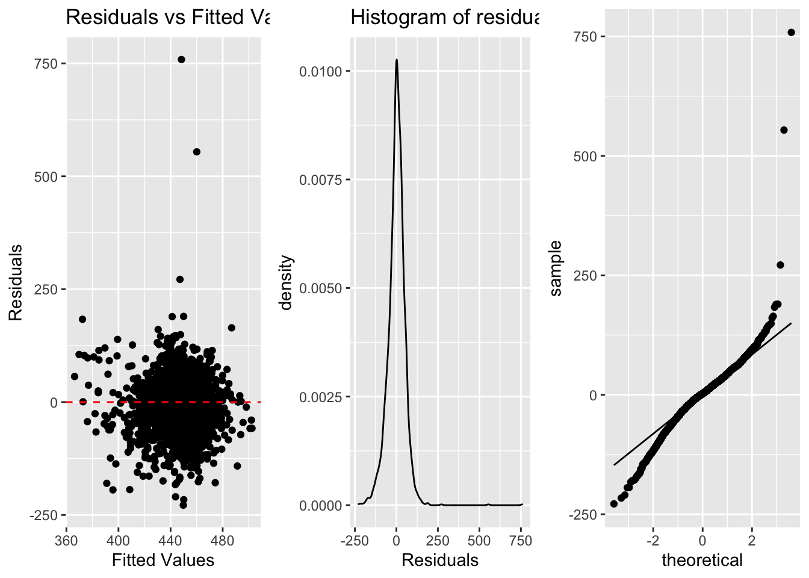

Last updated: 2020-12-23
Checks: 6 1
Knit directory: R-Guide/
This reproducible R Markdown analysis was created with workflowr (version 1.6.2). The Checks tab describes the reproducibility checks that were applied when the results were created. The Past versions tab lists the development history.
The R Markdown file has unstaged changes. To know which version of the R Markdown file created these results, you’ll want to first commit it to the Git repo. If you’re still working on the analysis, you can ignore this warning. When you’re finished, you can run wflow_publish to commit the R Markdown file and build the HTML.
Great job! The global environment was empty. Objects defined in the global environment can affect the analysis in your R Markdown file in unknown ways. For reproduciblity it’s best to always run the code in an empty environment.
The command set.seed(20201221) was run prior to running the code in the R Markdown file. Setting a seed ensures that any results that rely on randomness, e.g. subsampling or permutations, are reproducible.
Great job! Recording the operating system, R version, and package versions is critical for reproducibility.
Nice! There were no cached chunks for this analysis, so you can be confident that you successfully produced the results during this run.
Great job! Using relative paths to the files within your workflowr project makes it easier to run your code on other machines.
Great! You are using Git for version control. Tracking code development and connecting the code version to the results is critical for reproducibility.
The results in this page were generated with repository version e36211d. See the Past versions tab to see a history of the changes made to the R Markdown and HTML files.
Note that you need to be careful to ensure that all relevant files for the analysis have been committed to Git prior to generating the results (you can use wflow_publish or wflow_git_commit). workflowr only checks the R Markdown file, but you know if there are other scripts or data files that it depends on. Below is the status of the Git repository when the results were generated:
Ignored files:
Ignored: .RData
Ignored: .Rhistory
Ignored: .Rproj.user/
Unstaged changes:
Modified: analysis/index.Rmd
Note that any generated files, e.g. HTML, png, CSS, etc., are not included in this status report because it is ok for generated content to have uncommitted changes.
These are the previous versions of the repository in which changes were made to the R Markdown (analysis/index.Rmd) and HTML (docs/index.html) files. If you’ve configured a remote Git repository (see ?wflow_git_remote), click on the hyperlinks in the table below to view the files as they were in that past version.
| File | Version | Author | Date | Message |
|---|---|---|---|---|
| Rmd | e36211d | KaranSShakya | 2020-12-23 | correlation changes + added correlation for multiple |
| html | e36211d | KaranSShakya | 2020-12-23 | correlation changes + added correlation for multiple |
| Rmd | 9e05f60 | KaranSShakya | 2020-12-22 | better dataset and organizations |
| html | 9e05f60 | KaranSShakya | 2020-12-22 | better dataset and organizations |
| Rmd | 9a80c9d | KaranSShakya | 2020-12-22 | minor changes to toc order |
| html | 9a80c9d | KaranSShakya | 2020-12-22 | minor changes to toc order |
| Rmd | 2f9473e | KaranSShakya | 2020-12-22 | lagged regression |
| html | 2f9473e | KaranSShakya | 2020-12-22 | lagged regression |
| Rmd | efcd284 | KaranSShakya | 2020-12-22 | minor edits to toc |
| html | efcd284 | KaranSShakya | 2020-12-22 | minor edits to toc |
| Rmd | 257addc | KaranSShakya | 2020-12-22 | linear reg assumptions |
| html | 257addc | KaranSShakya | 2020-12-22 | linear reg assumptions |
| Rmd | 7a501fa | KaranSShakya | 2020-12-22 | TOC re-edited + correlation one var. |
| html | 7a501fa | KaranSShakya | 2020-12-22 | TOC re-edited + correlation one var. |
| Rmd | a494ed3 | KaranSShakya | 2020-12-21 | TOC FINAL FIX |
| html | a494ed3 | KaranSShakya | 2020-12-21 | TOC FINAL FIX |
| Rmd | 2eaade1 | KaranSShakya | 2020-12-21 | toc test againa |
| html | 2eaade1 | KaranSShakya | 2020-12-21 | toc test againa |
| Rmd | 3a2205e | KaranSShakya | 2020-12-21 | toc fix attempt? |
| html | 3a2205e | KaranSShakya | 2020-12-21 | toc fix attempt? |
| Rmd | 261ae64 | KaranSShakya | 2020-12-21 | toc fix with new format |
| html | 261ae64 | KaranSShakya | 2020-12-21 | toc fix with new format |
| Rmd | 81c56de | KaranSShakya | 2020-12-21 | toc changes final maybe |
| html | 81c56de | KaranSShakya | 2020-12-21 | toc changes final maybe |
| Rmd | b501120 | KaranSShakya | 2020-12-21 | toc collapse change |
| html | b501120 | KaranSShakya | 2020-12-21 | toc collapse change |
| Rmd | c9f84cd | KaranSShakya | 2020-12-21 | toc fix html |
| html | c9f84cd | KaranSShakya | 2020-12-21 | toc fix html |
| Rmd | df6b3c2 | KaranSShakya | 2020-12-21 | toc fixing test |
| html | df6b3c2 | KaranSShakya | 2020-12-21 | toc fixing test |
| Rmd | 7499ecb | KaranSShakya | 2020-12-21 | toc fix depth 2 |
| html | 7499ecb | KaranSShakya | 2020-12-21 | toc fix depth 2 |
| Rmd | 859395e | KaranSShakya | 2020-12-21 | toc fix |
| html | 859395e | KaranSShakya | 2020-12-21 | toc fix |
| Rmd | 63011cb | KaranSShakya | 2020-12-21 | First commits |
| html | 63011cb | KaranSShakya | 2020-12-21 | First commits |
| Rmd | c9dd7d1 | KaranSShakya | 2020-12-21 | Start workflowr project. |
tidyverse - basic package for data wrangling
readxl - allows inputs of excel files
readr - allows inputs of text files
jtools - summ functions for better regression outputs
broom - result organization with tidy tibbles
stargazer - better organized regression outputs
sandwitch - robust standard errors
Here is a basic example of linear regression. Age and Weight of an individual is used to predict the blood pressure.
model <- lm(bloodp~age+weight, data=bloodp)
summ(model)MODEL INFO:
Observations: 11
Dependent Variable: bloodp
Type: OLS linear regression
MODEL FIT:
F(2,8) = 168.76, p = 0.00
R² = 0.98
Adj. R² = 0.97
Standard errors: OLS
-------------------------------------------------
Est. S.E. t val. p
----------------- ------- ------- -------- ------
(Intercept) 30.99 11.94 2.59 0.03
age 0.86 0.25 3.47 0.01
weight 0.33 0.13 2.56 0.03
-------------------------------------------------The function summ is good and direct in printing output. The base r summary is okay to use, and the more intricate stargazer is good too.
summ will be used mostly here when printing regression outputs.
Correlation is the strength of linear assosciation. It can be sensitive to outliers. The pull function is used to print out the correlation value more.
cor <- corr_1 %>%
summarise(r=cor(X, Y)) %>%
pull(r)
cor[1] 0.8351438Observing correlation from regression. Sqrt of R^2 is correlation.
cor.lm <- lm(Y~X, data=corr_1)
summ(cor.lm)MODEL INFO:
Observations: 15
Dependent Variable: Y
Type: OLS linear regression
MODEL FIT:
F(1,13) = 29.97, p = 0.00
R² = 0.70
Adj. R² = 0.67
Standard errors: OLS
-------------------------------------------------
Est. S.E. t val. p
----------------- ------- ------- -------- ------
(Intercept) 25.23 10.06 2.51 0.03
X 3.29 0.60 5.47 0.00
-------------------------------------------------Or using base r function cor:
cor.2 <- cor(corr_1)
cor.2 X Y
X 1.0000000 0.8351438
Y 0.8351438 1.0000000Correlations can also be visualized through scatterplots which important to any econometric analysis. Method = “lm” produces the blue linear regression line.
ggplot(corr_1, aes(x=X, y=Y))+
geom_point(alpha=0.5)+
geom_smooth(method = "lm", se=F)
| Version | Author | Date |
|---|---|---|
| e36211d | KaranSShakya | 2020-12-23 |
Or, you can use the effects plot. This is an example of the blood pressure model.
effect_plot(model, pred = age, interval = T, plot.points = T)
| Version | Author | Date |
|---|---|---|
| e36211d | KaranSShakya | 2020-12-23 |
Multiple variables can be tabulated against eachother to observe the correlation. In this example, cancer diagnosis ~ income + age + private + public + per_white + per_black
Viewing correlation table:
cor.cancer <- cor(cancer.2)
cor.cancer Cancer_Diagnosis Median_Income Median_Age Private_Coverage
Cancer_Diagnosis 1.000000000 -0.001036186 0.018089172 0.105174269
Median_Income -0.001036186 1.000000000 -0.013287743 0.724174768
Median_Age 0.018089172 -0.013287743 1.000000000 0.004665111
Private_Coverage 0.105174269 0.724174768 0.004665111 1.000000000
Public_Coverage 0.046108610 -0.754821751 0.049060211 -0.720011521
Percent_White -0.014509829 0.167225441 0.035009366 0.429031447
Percent_Black 0.113488959 -0.270231619 -0.017173240 -0.345172126
Public_Coverage Percent_White Percent_Black
Cancer_Diagnosis 0.04610861 -0.01450983 0.11348896
Median_Income -0.75482175 0.16722544 -0.27023162
Median_Age 0.04906021 0.03500937 -0.01717324
Private_Coverage -0.72001152 0.42903145 -0.34517213
Public_Coverage 1.00000000 -0.13370507 0.19559747
Percent_White -0.13370507 1.00000000 -0.82845885
Percent_Black 0.19559747 -0.82845885 1.00000000Viewing in diagrams:
ggpairs(cancer.2)
| Version | Author | Date |
|---|---|---|
| e36211d | KaranSShakya | 2020-12-23 |
cancer diagnosis ~ income + age + private + public + per_white + per_black model is used in the following examples.
lm.model <- lm(Cancer_Diagnosis~Median_Income+Median_Age+Private_Coverage+Public_Coverage+Percent_White+Percent_Black, data=cancer.2)
summ(lm.model)MODEL INFO:
Observations: 3047
Dependent Variable: Cancer_Diagnosis
Type: OLS linear regression
MODEL FIT:
F(6,3040) = 40.40, p = 0.00
R² = 0.07
Adj. R² = 0.07
Standard errors: OLS
-------------------------------------------------------
Est. S.E. t val. p
---------------------- -------- ------- -------- ------
(Intercept) 245.57 16.73 14.68 0.00
Median_Income -0.00 0.00 -0.25 0.80
Median_Age 0.01 0.02 0.33 0.74
Private_Coverage 1.75 0.17 10.36 0.00
Public_Coverage 1.73 0.21 8.40 0.00
Percent_White 0.24 0.12 2.01 0.04
Percent_Black 0.91 0.13 7.16 0.00
-------------------------------------------------------To visualize the residual table we use the function augment.
lm.res <- augment(lm.model) a. Linearity (scatterplot + residual plot - residuals needs to be random)
b. Nearly normal residuals (histogram of residuals or QQ residual plot)
c. Constant variability (residual plot)
Link for interactive regression diagnostic test.
a <- ggplot(lm.res, aes(x=.fitted, y=.resid))+
geom_point()+
geom_hline(yintercept = 0, linetype="dashed", color="red")+
labs(title="Residuals vs Fitted Values", x="Fitted Values", y="Residuals")
b <- ggplot(lm.res, aes(x=.resid))+
geom_density()+
labs(title="Histogram of residuals", x="Residuals") #geom_density can also be added
c <- ggplot(lm.res, aes(sample=.resid))+
stat_qq()+
stat_qq_line()
| Version | Author | Date |
|---|---|---|
| e36211d | KaranSShakya | 2020-12-23 |
Covaraince matrix can be created using vocv.
vcov(lm.model) (Intercept) Median_Income Median_Age Private_Coverage
(Intercept) 279.895460469 -1.117642e-03 3.524437e-03 -9.377888e-01
Median_Income -0.001117642 1.921940e-08 -5.465260e-08 -1.062539e-05
Median_Age 0.003524437 -5.465260e-08 4.446881e-04 -9.975174e-05
Private_Coverage -0.937788802 -1.062539e-05 -9.975174e-05 2.851442e-02
Public_Coverage -2.612435764 1.144682e-05 -2.902941e-04 1.503650e-02
Percent_White -0.751040921 5.216770e-06 -4.661584e-05 -1.049701e-02
Percent_Black -0.951741623 5.275435e-06 -2.654088e-05 -6.561322e-03
Public_Coverage Percent_White Percent_Black
(Intercept) -2.612436e+00 -7.510409e-01 -9.517416e-01
Median_Income 1.144682e-05 5.216770e-06 5.275435e-06
Median_Age -2.902941e-04 -4.661584e-05 -2.654088e-05
Private_Coverage 1.503650e-02 -1.049701e-02 -6.561322e-03
Public_Coverage 4.239607e-02 -4.719157e-03 -2.531219e-03
Percent_White -4.719157e-03 1.479425e-02 1.282179e-02
Percent_Black -2.531219e-03 1.282179e-02 1.605172e-02This requires the sandwitch package. There are many robust standard error (heteroskedasctic errors) parameters ranging from HC0 to HC5. The default for STATA is HC1 which is important to keep in mind if we are trying to emulate STATA result.
model <- lm(bloodp~age+weight, data=bloodp)
summ(model, robust = "HC1")MODEL INFO:
Observations: 11
Dependent Variable: bloodp
Type: OLS linear regression
MODEL FIT:
F(2,8) = 168.76, p = 0.00
R² = 0.98
Adj. R² = 0.97
Standard errors: Robust, type = HC1
-------------------------------------------------
Est. S.E. t val. p
----------------- ------- ------- -------- ------
(Intercept) 30.99 10.60 2.92 0.02
age 0.86 0.30 2.92 0.02
weight 0.33 0.14 2.33 0.05
-------------------------------------------------Group 1, Group 2, and Group 3 are all dummy variables (0 or 1). When regressors are dummy variables you need to regress it without the intercept term.
reg <- lm(Earnings ~ -1+Group1+Group2+Group3, data=dummy)
summ(reg)MODEL INFO:
Observations: 4266
Dependent Variable: Earnings
Type: OLS linear regression
MODEL FIT:
F(3,4263) = 3842.49, p = 0.00
R² = 0.73
Adj. R² = 0.73
Standard errors: OLS
------------------------------------------------
Est. S.E. t val. p
------------ ---------- -------- -------- ------
Group1 22880.48 467.45 48.95 0.00
Group2 25080.17 380.02 66.00 0.00
Group3 27973.63 404.78 69.11 0.00
------------------------------------------------If we want to add the intercept term, one of the dummy variables needs to be removed to avoid collinearity with the intercept term.
reg2 <- lm(Earnings~Group1+Group2, data=dummy)
summ(reg2)MODEL INFO:
Observations: 4266
Dependent Variable: Earnings
Type: OLS linear regression
MODEL FIT:
F(2,4263) = 34.98, p = 0.00
R² = 0.02
Adj. R² = 0.02
Standard errors: OLS
-----------------------------------------------------
Est. S.E. t val. p
----------------- ---------- -------- -------- ------
(Intercept) 27973.63 404.78 69.11 0.00
Group1 -5093.16 618.35 -8.24 0.00
Group2 -2893.46 555.21 -5.21 0.00
-----------------------------------------------------lag1 <- lag %>%
mutate(Work_1 = lag(Work, 1)) %>%
mutate(Work_2 = lag(Work, 2))
kable(head(lag1))| Year | Income | Work | Work_1 | Work_2 |
|---|---|---|---|---|
| 2000 | 55 | 30 | NA | NA |
| 2001 | 60 | 31 | 30 | NA |
| 2002 | 65 | 32 | 31 | 30 |
| 2003 | 70 | 33 | 32 | 31 |
| 2004 | 75 | 34 | 33 | 32 |
| 2005 | 80 | 35 | 34 | 33 |
Using this we can perform linear regression the normal way:
reg <- lm(Income ~ Work+Work_1+Work_2, data=dataset)There are two methods that can be used. The base r confint and summ. Both examples are below. The dummy variable regression result is used as example.
MODEL INFO:
Observations: 4266
Dependent Variable: Earnings
Type: OLS linear regression
MODEL FIT:
F(3,4263) = 3842.49, p = 0.00
R² = 0.73
Adj. R² = 0.73
Standard errors: OLS
------------------------------------------------
Est. S.E. t val. p
------------ ---------- -------- -------- ------
Group1 22880.48 467.45 48.95 0.00
Group2 25080.17 380.02 66.00 0.00
Group3 27973.63 404.78 69.11 0.00
------------------------------------------------The confint method to find a 95% CI is,
confint(reg, level=0.95) 2.5 % 97.5 %
Group1 21964.03 23796.92
Group2 24335.14 25825.21
Group3 27180.06 28767.21The summ method to find a 95% CI is,
summ(reg, confint = TRUE, ci.width = 0.95, digits = 3)MODEL INFO:
Observations: 4266
Dependent Variable: Earnings
Type: OLS linear regression
MODEL FIT:
F(3,4263) = 3842.486, p = 0.000
R² = 0.730
Adj. R² = 0.730
Standard errors: OLS
-----------------------------------------------------------------
Est. 2.5% 97.5% t val. p
------------ ----------- ----------- ----------- -------- -------
Group1 22880.476 21964.029 23796.922 48.947 0.000
Group2 25080.174 24335.139 25825.209 65.997 0.000
Group3 27973.635 27180.058 28767.211 69.109 0.000
-----------------------------------------------------------------
sessionInfo()R version 4.0.0 (2020-04-24)
Platform: x86_64-apple-darwin17.0 (64-bit)
Running under: macOS 10.16
Matrix products: default
BLAS: /Library/Frameworks/R.framework/Versions/4.0/Resources/lib/libRblas.dylib
LAPACK: /Library/Frameworks/R.framework/Versions/4.0/Resources/lib/libRlapack.dylib
locale:
[1] en_US.UTF-8/en_US.UTF-8/en_US.UTF-8/C/en_US.UTF-8/en_US.UTF-8
attached base packages:
[1] stats graphics grDevices utils datasets methods base
other attached packages:
[1] gridExtra_2.3 GGally_2.0.0 jtools_2.1.1 stargazer_5.2.2
[5] broom_0.5.6 readxl_1.3.1 forcats_0.5.0 stringr_1.4.0
[9] dplyr_0.8.5 purrr_0.3.4 readr_1.3.1 tidyr_1.0.3
[13] tibble_3.0.1 ggplot2_3.3.0 tidyverse_1.3.0 knitr_1.28
[17] workflowr_1.6.2
loaded via a namespace (and not attached):
[1] Rcpp_1.0.4.6 lubridate_1.7.8 lattice_0.20-41 zoo_1.8-8
[5] assertthat_0.2.1 rprojroot_1.3-2 digest_0.6.25 R6_2.4.1
[9] cellranger_1.1.0 plyr_1.8.6 backports_1.1.6 reprex_0.3.0
[13] evaluate_0.14 highr_0.8 httr_1.4.1 pillar_1.4.4
[17] rlang_0.4.6 rstudioapi_0.11 whisker_0.4 Matrix_1.2-18
[21] rmarkdown_2.6 labeling_0.3 splines_4.0.0 pander_0.6.3
[25] munsell_0.5.0 compiler_4.0.0 httpuv_1.5.2 modelr_0.1.7
[29] xfun_0.19 pkgconfig_2.0.3 mgcv_1.8-31 htmltools_0.5.0
[33] tidyselect_1.1.0 reshape_0.8.8 fansi_0.4.1 crayon_1.3.4
[37] dbplyr_1.4.3 withr_2.2.0 later_1.0.0 grid_4.0.0
[41] nlme_3.1-147 jsonlite_1.6.1 gtable_0.3.0 lifecycle_0.2.0
[45] DBI_1.1.0 git2r_0.27.1 magrittr_1.5 scales_1.1.1
[49] cli_2.0.2 stringi_1.4.6 farver_2.0.3 fs_1.4.1
[53] promises_1.1.0 xml2_1.3.2 ellipsis_0.3.0 generics_0.0.2
[57] vctrs_0.3.0 sandwich_3.0-0 RColorBrewer_1.1-2 tools_4.0.0
[61] glue_1.4.1 hms_0.5.3 yaml_2.2.1 colorspace_1.4-1
[65] rvest_0.3.5 haven_2.2.0